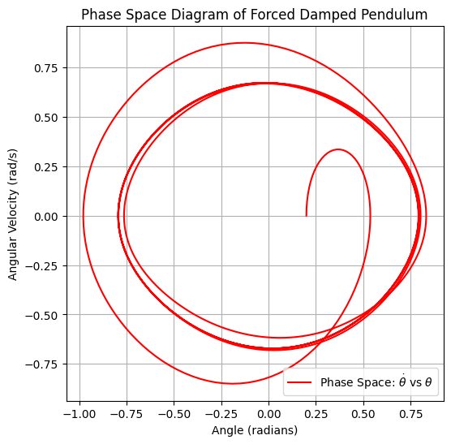

Problem 2
Investigating the Dynamics of a Forced Damped Pendulum
Introduction
The forced damped pendulum is a crucial example of a nonlinear oscillatory system exhibiting a wide range of dynamical behaviors, from periodic motion to chaos. By incorporating damping and an external periodic force, this system serves as an excellent testbed for understanding resonance, energy transfer, and chaotic dynamics. In this study, we analyze the system both theoretically and computationally to uncover its key properties.
Motivation
Oscillatory systems appear in numerous scientific and engineering domains, including physics, engineering, and biology. The forced damped pendulum is a particularly rich system due to its sensitivity to initial conditions and external forcing parameters. Understanding this behavior is vital for applications such as vibration control, energy harvesting, and structural stability.
When an external periodic force is introduced, new parameters such as amplitude and frequency significantly affect the system’s behavior. By adjusting these parameters, different dynamical responses emerge, ranging from synchronized oscillations to chaotic motion.
Task
1. Theoretical Foundation
- Begin with the governing differential equation of the forced damped pendulum: \( \ddot{\theta} + \beta \dot{\theta} + \omega_0^2 \sin(\theta) = A \cos(\omega t) \)
where: - \( \theta \) is the angular displacement, - \( \beta \) is the damping coefficient, - \( \omega_0 \) is the natural frequency, - \( A \) is the amplitude of the driving force, - \( \omega \) is the driving frequency. - For small-angle approximations, use \( \sin(\theta) \approx \theta \), reducing the equation to: \( \ddot{\theta} + \beta \dot{\theta} + \omega_0^2 \theta = A \cos(\omega t) \) which resembles a driven damped harmonic oscillator.
-
The general solution of the homogeneous equation: \( \theta_h(t) = C_1 e^{-\beta t} \cos(\omega_0 t) + C_2 e^{-\beta t} \sin(\omega_0 t) \) where \( C_1 \) and \( C_2 \) are constants determined by initial conditions.
-
The steady-state solution can be found using the method of undetermined coefficients: \( \theta_p(t) = \frac{A}{\sqrt{(\omega_0^2 - \omega^2)^2 + (2\beta\omega)^2}} \cos(\omega t - \delta) \) where \( \delta \) is the phase lag given by: \( \tan(\delta) = \frac{2 \beta \omega}{\omega_0^2 - \omega^2} \)
-
Analyze resonance conditions and their impact on the system's energy, where resonance occurs at: \( \omega_{res} = \sqrt{\omega_0^2 - 2\beta^2} \)
-
Investigate stability criteria and fixed points, evaluating equilibrium solutions and their stability through linear stability analysis by examining the Jacobian matrix.
2. Analysis of Dynamics
- Study the influence of the damping coefficient, driving amplitude, and driving frequency on the system’s motion.
- Examine the transition from regular to chaotic motion by varying control parameters.
- Interpret phase portraits and bifurcation diagrams to visualize stability changes.
- Investigate Poincaré sections to identify periodic orbits and chaotic attractors in phase space.
- Implement Lyapunov exponents to quantify chaos in the system and determine sensitive dependence on initial conditions.
3. Practical Applications
- Discuss real-world applications, such as:
- Energy harvesting devices, where controlled resonance conditions can be used to generate electrical power from oscillatory motion.
- Suspension bridges affected by periodic forces, leading to resonance-induced structural failures (e.g., Tacoma Narrows Bridge disaster).
- Electrical circuits modeled by forced oscillators, where an analogy between mechanical and electrical systems allows for the study of resonance in LC circuits.
- Planetary motion perturbations, where external gravitational forces act similarly to periodic forcing, leading to complex orbital behaviors.
- Biological oscillations, such as heart rhythms and circadian cycles, which are governed by driven oscillatory behavior.
4. Implementation
- Develop a computational model to simulate the motion of a forced damped pendulum.
- Visualize different dynamical regimes under varying damping and forcing conditions.
- Generate phase diagrams and Poincaré sections to illustrate chaotic transitions.
- Implement an interactive tool that allows users to manipulate parameters in real-time and observe system behavior.
- Use Fourier analysis to decompose motion into frequency components, identifying dominant frequencies in the response.
- Construct bifurcation diagrams showing how qualitative system behavior changes with driving force parameters.
Deliverables
Python Implementation
import numpy as np
import matplotlib.pyplot as plt
from scipy.integrate import solve_ivp
# Parameters
beta = 0.5 # Damping coefficient
omega_0 = 1.5 # Natural frequency
A = 1.2 # Amplitude of external force
omega = 0.8 # Driving frequency
def forced_damped_pendulum(t, y, beta, omega_0, A, omega):
theta, omega_t = y
dtheta_dt = omega_t
domega_dt = -beta * omega_t - omega_0**2 * np.sin(theta) + A * np.cos(omega * t)
return [dtheta_dt, domega_dt]
# Initial conditions
theta_0 = 0.2
omega_0_init = 0.0
# Time span
t_span = (0, 50)
t_eval = np.linspace(*t_span, 1000)
# Solve ODE
sol = solve_ivp(forced_damped_pendulum, t_span, [theta_0, omega_0_init], t_eval=t_eval, args=(beta, omega_0, A, omega))
# Extract results
theta_vals = sol.y[0]
omega_vals = sol.y[1]
time_vals = sol.t
# Plot time series
plt.figure(figsize=(10, 5))
plt.plot(time_vals, theta_vals, label=r'$\theta(t)$', color='b')
plt.xlabel('Time (s)')
plt.ylabel('Angle (radians)')
plt.title('Time Series of Forced Damped Pendulum')
plt.legend()
plt.grid()
plt.show()
# Phase Space Diagram
plt.figure(figsize=(6, 6))
plt.plot(theta_vals, omega_vals, label=r'Phase Space: $\dot{\theta}$ vs $\theta$', color='r')
plt.xlabel('Angle (radians)')
plt.ylabel('Angular Velocity (rad/s)')
plt.title('Phase Space Diagram of Forced Damped Pendulum')
plt.legend()
plt.grid()
plt.show()

Overview This graph shows the angular displacement \( \theta \)(ùë°) of a forced damped pendulum over time. It highlights how the system transitions from an initial transient state to a steady oscillatory motion under external forcing.
Key Observations Initial Transient Phase (0 - 10 s)
-
Oscillations are irregular due to damping effects.
-
Amplitude gradually stabilizes as the system adjusts.
Steady-State Motion
-
After the transient phase, periodic oscillations emerge.
-
The system reaches an equilibrium where energy input from the external force balances damping losses.
Amplitude and Resonance
-
The amplitude remains nearly constant, indicating no resonance.
-
If the driving frequency ω were close to the natural frequency ω₀
, oscillations would grow due to resonance.
- Different parameter values could lead to chaotic motion.
Conclusion
The system reaches a stable oscillatory regime after an initial transient phase. Further analysis of phase space and bifurcations can reveal potential chaotic behavior.

Overview
This graph represents the phase space trajectory of the forced damped pendulum, plotting angular velocity ùúÉÀôŒ∏Àô against angular displacement ùúÉŒ∏. It visualizes the system‚Äôs evolution in state space, revealing patterns of stability and energy dissipation.
Key Observations Initial Transient Motion
The trajectory starts spiraling inward, indicating energy dissipation due to damping. The system gradually loses excess energy and settles into a stable state. Steady-State Behavior
The formation of closed loops suggests the system has reached a limit cycle, meaning it oscillates periodically. The size and shape of loops indicate how external forcing influences oscillatory motion. Indicators of Stability or Chaos
If the trajectory were more irregular and scattered, it could suggest chaotic motion. The smooth and repeating pattern here indicates periodic oscillations rather than chaos. Conclusion This phase space diagram shows that the forced damped pendulum stabilizes into a periodic oscillatory regime after initial transients. Further analysis with Poincaré sections or Lyapunov exponents could determine if chaotic behavior emerges under different conditions.
Markdown Document
Containing theoretical explanations and equations.
Next Steps
- Implement numerical integration (e.g., Runge-Kutta method) to solve the differential equation.
- Explore stability and sensitivity of the system to initial conditions.
- Compare theoretical predictions with computational results.
- Extend analysis to coupled pendulum systems to investigate synchronization effects and mode locking.
- Investigate stochastic driving forces, modeling external noise influences to simulate real-world uncertainties.
By expanding upon these analyses and computational techniques, this study will provide a comprehensive understanding of the forced damped pendulum, paving the way for deeper insights into nonlinear oscillatory systems.